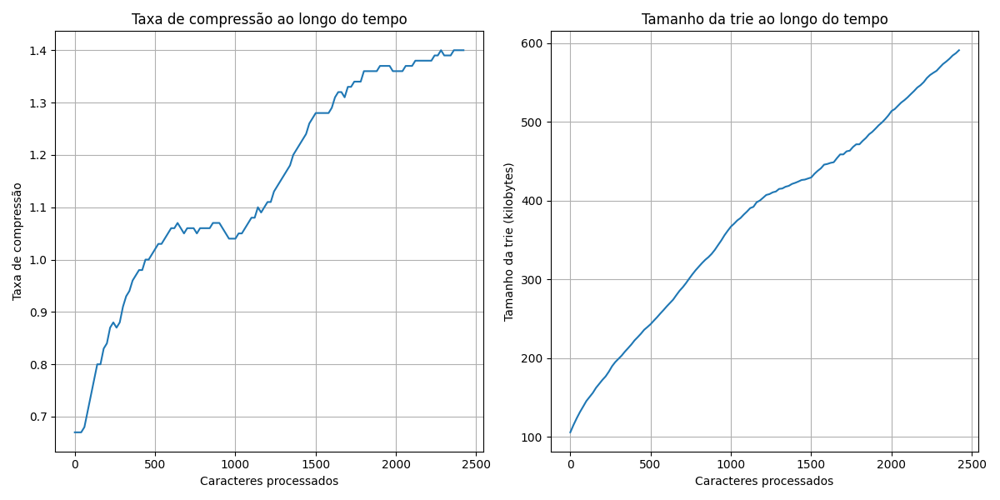
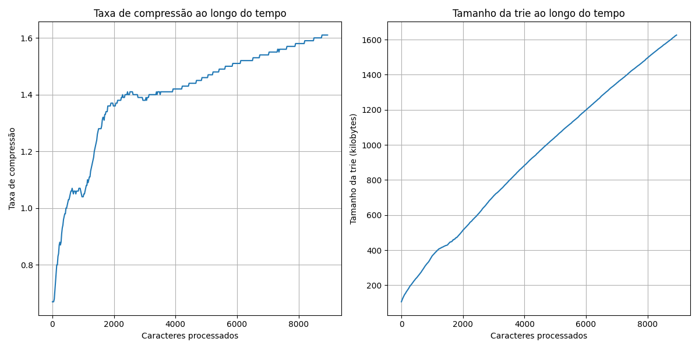
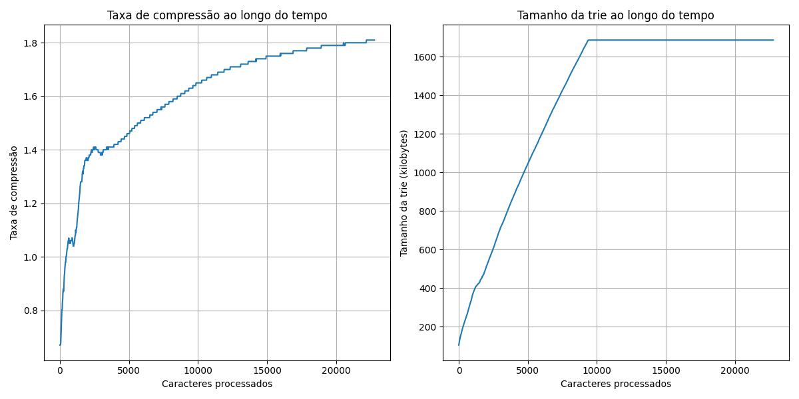
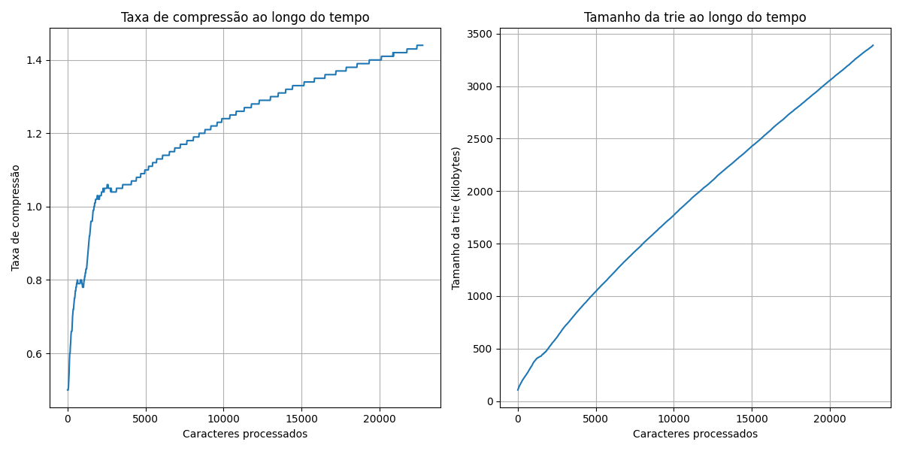
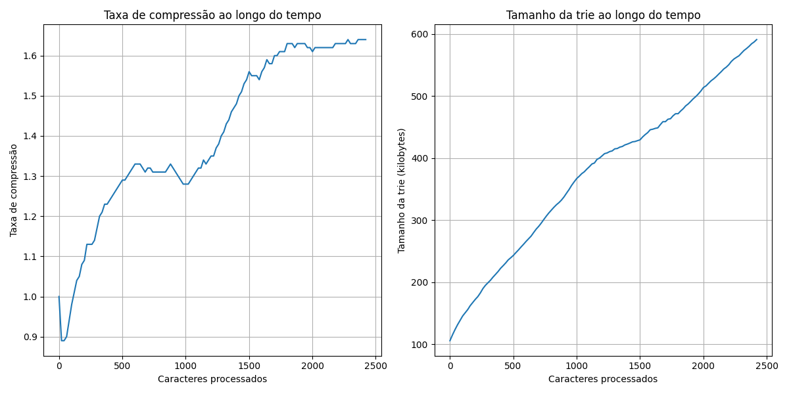
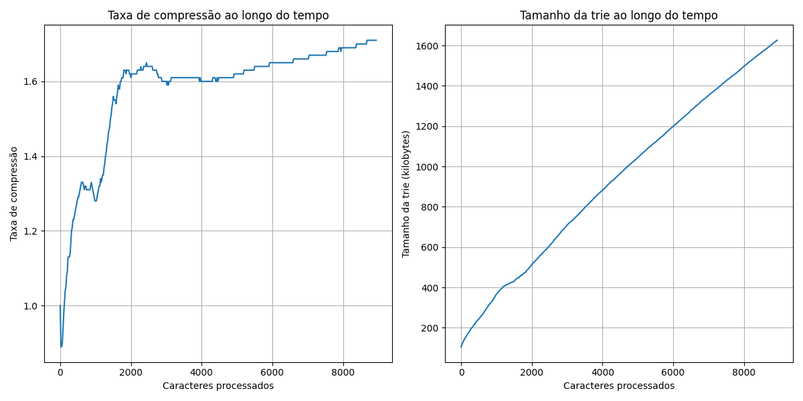
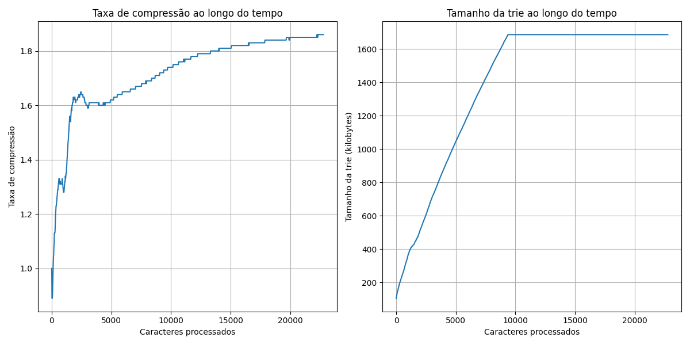
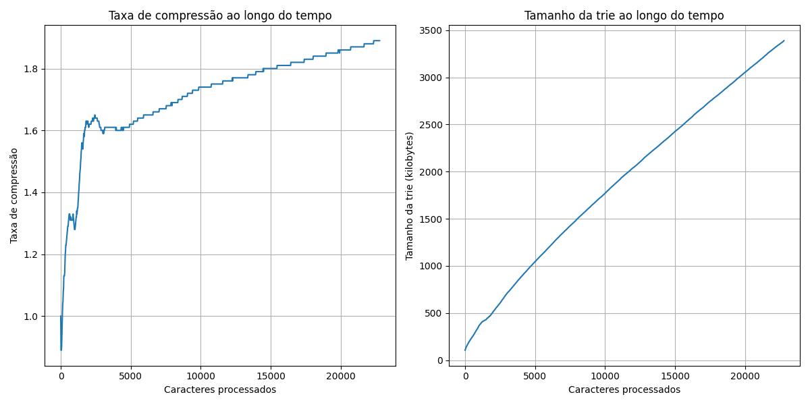

Algoritmos de compressão e descompressão
Descrição do problema
Este trabalho prático aborda a implementação do algoritmo de compressão Lempel-Ziv-Welch (LZW) utilizando a
estrutura de dados Trie. O objetivo é explorar os aspectos práticos da manipulação de sequências e a aplicação de
árvores de prefixo na compressão de arquivos. O trabalho inclui a implementação das versões do algoritmo LZW com
tamanho de código fixo e variável, bem como a estrutura de dados Trie para o dicionário. Além disso, serão
realizados testes com diferentes tipos arquivos de texto, para avaliar o desempenho
do algoritmo em termos de taxa de compressão, tempo de execução e consumo de memória.
Algoritmo LZW
Funcionamento
O algoritmo LZW é um algoritmo de compressão de dados sem perdas que utiliza um dicionário para armazenar
sequências de caracteres. O dicionário é inicializado com todos os caracteres individuais possíveis. Durante
a compressão, o algoritmo lê o texto de entrada caractere por caractere e verifica se a sequência atual de
caracteres já existe no dicionário. Se existir, a sequência é estendida com o próximo caractere. Caso contrário,
o código correspondente à sequência atual é emitido para o arquivo comprimido, a sequência é adicionada ao
dicionário e uma nova sequência é iniciada com o próximo caractere.

O processo de descompressão funciona de forma inversa. O dicionário é inicializado da mesma forma que na
compressão. O algoritmo lê os códigos comprimidos do arquivo e procura as sequências correspondentes no
dicionário. Se o código for encontrado, a sequência é emitida para o arquivo descomprimido. Se o código não
for encontrado, o algoritmo reconstrói a sequência a partir das sequências anteriores e a adiciona ao
dicionário.
Implementação
Estrutura de dados Trie compacta
A estrutura de dados Trie compacta foi utilizada para implementar o dicionário do algoritmo LZW. A Trie compacta é uma árvore
que permite armazenar e pesquisar sequências de caracteres de forma eficiente. Cada nó da Trie compacta representa
uma string de um ou mais caracteres e cada caminho da raiz até um nó representa uma sequência de caracteres. A Trie compacta é eficiente para a
busca de prefixos, o que é fundamental para o algoritmo LZW.
Funcionalidade
A implementação inclui as seguintes funcionalidades:
- Inserção na Trie: Adiciona uma nova sequência de caracteres à Trie.
- Busca na Trie: Verifica se uma sequência de caracteres existe na Trie.
- Remoção da Trie: Remove uma sequência de caracteres da Trie.
- Compressão: Comprime um arquivo de texto usando o algoritmo LZW.
- Descompressão: Descomprime um arquivo comprimido usando o algoritmo LZW.
Parametros
A implementação utiliza os seguintes parâmetros de linha de comando:
input_file: Caminho para o arquivo de entrada (obrigatório).output_file: Caminho para o arquivo de saída (obrigatório).-m ou --max_bits: Número máximo de bits (opcional, padrão: 12). -d ou --dynamic: Utiliza comprimento de bit dinâmico (opcional, padrão: fixo).-t ou --test: Habilita o modo de teste (coleta estatísticas) (opcional).
Exemplo de Uso:
python main.py input.txt output.lzw -m 13 -d -t
Dependências
A implementação requer as seguintes dependências:
- Python 3 ou superior
- matplotlib
- Pympler
Testes e Resultados
Metodologia
Os testes foram conduzidos com o objetivo de avaliar o desempenho do algoritmo LZW implementado,
tanto em termos de taxa de compressão quanto em termos de tempo de execução e recursos de memória utilizados.
Para isso, utilizamos três arquivos de texto de diferentes tamanhos como entrada para o algoritmo.
Os testes foram inicialmente realizados com compressão estática (tamanho de código fixo de 12 bits), e
posteriormente com compressão dinâmica, como detalhado nas seções subsequentes. A estrutura de dados Trie compacta
foi analisada em relação ao seu crescimento durante o processo de compressão.
Compressão Estática
Nesta fase, o algoritmo LZW foi executado com o parâmetro `-m` definido como 12 (o padrão),
com um tamanho de código fixo. Os tempos de execução foram medidos para cada arquivo de entrada
e são apresentados na tabela abaixo:
| Arquivo |
Tamanho (caracteres) |
Tempo de Compressão (s) |
| Arquivo 1 |
2421 |
0.0102 |
| Arquivo 2 |
8941 |
0.0215 |
| Arquivo 3 |
22781 |
0.0407 |
O arquivo de maior tamanho (22781 caracteres) foi também comprimido com o parâmetro `-m 16` para avaliar o
impacto do aumento do número máximo de bits na compressão e no tamanho da Trie compacta.
Os gráficos abaixo ilustram a taxa de compressão e o crescimento da Trie compacta ao longo do processamento
dos arquivos. Observa-se que a taxa de compressão tende a estabilizar à medida que mais caracteres são
processados, e o tamanho da Trie cresce conforme novas entradas são adicionadas ao dicionário.




Compressão Dinâmica
A compressão dinâmica foi avaliada utilizando o parâmetro `-d`. Assim como nos testes com compressão estática,
os três arquivos de texto foram utilizados como entrada. A principal diferença na compressão dinâmica é que o
tamanho do código não é fixo, começando com 9 bits e aumentando conforme necessário até o limite máximo
definido por `-m` (que permanece como 12 por padrão, exceto onde explicitamente alterado).




Ao comparar os resultados da compressão dinâmica com os da compressão estática, observa-se que a compressão
dinâmica alcança uma taxa de compressão consistentemente superior. Isso ocorre porque o ajuste dinâmico do tamanho
do código permite uma representação mais eficiente de sequências repetitivas e padrões complexos, adaptando-se
melhor às características do arquivo de entrada à medida que novos dados são processados.
Conclusão
O trabalho apresentou a implementação e avaliação do algoritmo de compressão Lempel-Ziv-Welch (LZW)
utilizando uma estrutura de dados eficiente, a Trie compacta. Os testes realizados permitiram analisar o
desempenho do algoritmo em diferentes cenários, comparando a compressão com tamanhos de código fixo e dinâmico.
Os resultados demonstraram que o uso da Trie compacta proporcionou eficiência na busca e inserção de novas sequências,
impactando positivamente o tempo de execução. A compressão dinâmica mostrou-se superior em termos de taxa de
compressão, especialmente para arquivos maiores, adaptando-se melhor às variações nos dados.
Em suma, a implementação do algoritmo LZW com Trie compacta se mostrou eficaz tanto em termos de compressão quanto
de desempenho. A comparação entre compressão estática e dinâmica revelou que a escolha do método deve considerar o
contexto e os requisitos específicos, como limitação de memória ou a necessidade de uma taxa de compressão mais
alta. Os resultados obtidos validam o uso do LZW como uma solução prática para compressão de arquivos de texto,
destacando a importância das estruturas de dados adequadas para maximizar a eficiência dos algoritmos de compressão.